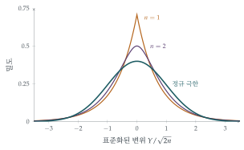

STEP III 2008, 문제 12
계속 읽기 전에 문제를 먼저 읽어 보자. 문제는 STEP Support Programme의 문제 데이터베이스에 있다: step.maths.org/questions/08-s3-q12
도입
서로 독립인 작은 무작위 효과를 많이 더하면, 각각이 어떤 분포를 따르든 그 합은 종 모양의 정규분포(normal distribution) 곡선을 따른다. 이것이 중심극한정리(central limit theorem)로, 아마도 확률론에서 가장 중요한 정리일 것이다. 이 정리는 키, 측정 오차, 시험 점수가 대체로 정규분포를 따르는 이유를 설명하고, 또 통계학자들이 바탕에 깔린 분포에 대해 아무것도 모르면서도 평균이 얼마나 믿을 만한지 말할 수 있는 이유를 설명한다. 단, 그 분포의 분산(variance)이 유한해야 한다(12.22 절와 비교해 보라).
이 문제는 특수한 경우에 이 정리를 증명한다. 개구리 한 마리가 양쪽 지수분포(two-sided exponential distribution)를 따르는 무작위 점프를 한다. 이 분포의 밀도함수(density)는 뾰족한 봉우리를 가지며 종 모양과는 전혀 닮지 않았다. 그런데 점프를 많이 하고 나면 개구리의 전체 변위는 정규분포를 따른다. 여기서 쓰는 도구는 적률생성함수(moment generating function)로, 이 함수는 독립인 확률변수의 합을 곱으로 바꾸고, 로그를 취하면 곱은 다시 합으로 바뀐다.
적률생성함수는 2019년에 STEP 출제 범위에서 빠졌다. 확률변수 \(X\)의 적률생성함수는 \(\mathrm{M}_X(\theta) = \mathrm{E}(e^{\theta X})\)이다. 이 함수의 \(0\)에서의 도함수들이 적률(moment)을 준다: \(\mathrm{M}'(0) = \mathrm{E}(X)\), \(\mathrm{M}''(0) = \mathrm{E}(X^2)\). 서로 독립인 \(X\)와 \(Y\)에 대하여 \(\mathrm{M}_{X+Y} = \mathrm{M}_X\mathrm{M}_Y\)이고, \(\mathrm{M}_{cX}(\theta) = \mathrm{M}_X(c\theta)\)이다. 적률생성함수들이 수렴하면 (적절한 의미에서) 분포들도 수렴한다.
시작하기 전에
밀도함수 \(\frac12e^{-|x|}\)는 대칭이다. 그래프는 어떤 모양인가? 평균은 얼마인가?
이 그래프는 \(0\)에서 높이 \(\frac12\)인 뾰족한 봉우리를 가지고 양쪽으로 지수적으로 감소하는 천막 모양의 곡선이다(그림 12.24.1). 대칭성에 의해 평균은 \(0\)이다.
차근차근 풀기
단계 1 적률생성함수
\(|\theta| < 1\)일 때, 적분을 \(0\)에서 나누면 \[\mathrm{M}_X(\theta) = \frac12\int_{-\infty}^0e^{(1 + \theta)x}\,\mathrm{d}x + \frac12\int_0^\infty e^{-(1 - \theta)x}\,\mathrm{d}x = \frac12\Bigl(\frac{1}{1 + \theta} + \frac{1}{1 - \theta}\Bigr) = \frac{1}{1 - \theta^2}. \qed\] 전개하면 \(\mathrm{M}_X(\theta) = 1 + \theta^2 + \theta^4 + \cdots\)이므로 \(\mathrm{E}(X) = 0\)이고 \(\mathrm{E}(X^2) = 2\)이다(\(\frac{\theta^2}{2!}\)의 계수). 따라서 분산은 \(2\)이다.
단계 2 개구리의 변위
\(Y = X_1 + \cdots + X_n\)의 적률생성함수는 무엇인가? \(Y/\sqrt{2n}\)의 적률생성함수는?
독립성에 의해 \(\mathrm{M}_Y(\theta) = (1 - \theta^2)^{-n}\)이고, 척도를 바꾸면 \[\mathrm{M}_{Y/\sqrt{2n}}(\theta) = \mathrm{M}_Y\Bigl(\frac{\theta}{\sqrt{2n}}\Bigr) = \Bigl(1 - \frac{\theta^2}{2n}\Bigr)^{-n}.\] (\(Y\)의 표준편차(standard deviation)인 \(\sqrt{2n}\)으로 나누면 분산이 \(1\)이 된다.)
단계 3 극한
로그를 취하고, 작은 \(u\)에 대하여 \(\ln(1 - u) \approx -u\)임을 이용하라.
\(\ln\mathrm{M}_{Y/\sqrt{2n}}(\theta) = -n\ln\bigl(1 - \frac{\theta^2}{2n}\bigr) = -n\bigl(-\frac{\theta^2}{2n} - \frac{\theta^4}{8n^2} - \cdots\bigr) \to \frac{\theta^2}{2}\)이므로 \[\mathrm{M}_{Y/\sqrt{2n}}(\theta) \to e^{\theta^2/2}, \qed\] 이고, 이것은 표준정규분포의 적률생성함수이다.
단계 4 개구리의 확률
\(n\)이 크면 \(Y\)는 근사적으로 \(\mathrm{N}(0, 2n)\)을 따른다. 언제 \(\mathrm{P}(|Y| \geq 25) = 0.05\)가 되는가?
표준정규분포를 따르는 \(Z\)에 대하여 \(\mathrm{P}(|Z| \geq 1.96) = 0.05\)이다. 따라서 \(\frac{25}{\sqrt{2n}} = 1.96\)이어야 하고, 이로부터 \(2n = \bigl(\frac{25}{1.96}\bigr)^2 \approx 162.7\), 즉 \(n \approx 81.3\)을 얻는다. 멀리 떨어진 곳에 도착할 확률은 \(n\)이 커질수록 커지므로, 확률이 \(5\%\) 이상이 되게 하는 최소 점프 횟수는 약 \(82\)이다.■

돌아보기
변환은 합을 곱으로 바꾼다. 독립인 확률변수들의 합의 적률생성함수는 각 적률생성함수의 곱이다.
로그는 곱을 합으로 바꾼다. \(\ln\bigl(1 - \frac{\theta^2}{2n}\bigr)^{-n}\)은 극한을 구하기 쉬운 합이 되었다.
표준화하라. 표준편차 \(\sqrt{2n}\)으로 나누어 분산을 \(1\)로 유지했기 때문에 극한이 \(0\)도 무한대도 아니게 되었다.
숨은 수학
일반적인 정리
같은 논증은 평균이 \(0\)이고 분산 \(\sigma^2\)이 유한한 임의의 분포에 대해서도 성립한다(적률생성함수가 존재해야 하지만, 이 조건은 피할 수 있다). 이때 \(\mathrm{M}(\theta) = 1 + \frac12\sigma^2\theta^2 + o(\theta^2)\)이고, \[\Bigl(\mathrm{M}\Bigl(\frac{\theta}{\sigma\sqrt n}\Bigr)\Bigr)^n = \Bigl(1 + \frac{\theta^2}{2n} + o\Bigl(\frac1n\Bigr)\Bigr)^n \to e^{\theta^2/2}.\] 극한에서 살아남는 것은 분산뿐이고, 원래 분포의 모양은 잊힌다. 정규분포가 보편적인 이유가 바로 이것이다. 대학에서는 항상 존재하는 특성함수(characteristic function) \(\mathrm{E}(e^{i\theta X})\)를 이용하여 이 정리를 증명하고, 분포의 수렴은 레비(Lévy)의 연속성 정리로 엄밀하게 다룬다.
얼마나 빠른가?
중심극한정리는 극한에서 무슨 일이 일어나는지 말해 줄 뿐, 얼마나 빨리 일어나는지는 말해 주지 않는다. 베리-에센 정리(Berry–Esseen theorem)는 오차를 상수 곱하기 \(\frac{\mathrm{E}|X|^3}{\sigma^3\sqrt n}\)으로 제한한다. 개구리의 분포처럼 대칭인 분포에서는 수십 번만 점프해도 근사가 좋다. 치우친(skewed) 분포이거나 꼬리의 극단적인 부분에서는 \(n\)이 커도 근사가 나쁠 수 있다. 정규근사는 매우 드문 사건이 일어날 확률을 과소평가하며, 이 사실은 보험과 금융에 중대한 영향을 미친다.
드무아브르(de Moivre)는 1733년에 이항분포의 정규근사를 발견했고(12.23 절), 라플라스(Laplace)는 1810년에 이를 더 일반적인 확률변수들의 합으로 확장하면서 측정 오차가 많은 작은 효과의 합이라는 생각을 처음 내놓았다. 엄밀한 증명은 훨씬 뒤에 나왔다. 1901년에 알렉산드르 랴푸노프(Aleksandr Lyapunov)가, 그리고 1922년에 야를 린데베리(Jarl Lindeberg)가 증명했는데, 린데베리는 정리가 성립하는 본질적으로 가장 약한 조건을 찾아냈다. “중심극한정리”라는 이름은 1920년에 조지 포여(George Pólya)가 붙인 것으로, 이 정리가 확률론의 중심에 있다는 뜻이다.
사고 기술
어려운 연산(독립인 확률변수를 더하는 것, 즉 밀도함수들의 합성곱(convolution)을 구하는 것)도 변환을 거치면 쉬운 연산(곱셈)이 된다. 그곳에서 계산을 하고, 그 결과를 해석하라.
같은 전략이 생성함수(9.4 절), 해석학과 공학에서 쓰이는 푸리에(Fourier) 변환과 라플라스 변환, 그리고 곱셈을 덧셈으로 바꾸는 로그의 바탕에 깔려 있다.
더 도전하기
점프 두 번의 정확한 분포. \(Y = X_1 + X_2\)의 밀도함수가 \(\frac14(1 + |y|)e^{-|y|}\)임을 보이고, 분산이 \(4\)임을 확인하라.
이항분포에서 정규분포로. 평균이 \(0\)이 되도록 평행이동한(즉 \(\pm\frac12\)의 값을 갖는) \(X \sim \mathrm{B}(1, \frac12)\)에 대하여 \(\mathrm{M}_X(\theta) = \cosh\frac\theta2\)임을 구하고, 이러한 확률변수 \(n\)개의 합을 표준화한 것의 적률생성함수가 \(e^{\theta^2/2}\)로 수렴함을 보여라.
개구리, 정확하게. 컴퓨터를 이용하여(또는 검산용으로 \(n = 2\)일 때의 정확한 밀도함수를 이용하여) \(n = 82\)일 때 정규근사가 얼마나 정확한지 알아보라.
코시 분포는 왜 안 되는가? 코시 분포(Cauchy distribution)(12.22 절)는 적률생성함수가 없다. 논증의 어느 단계가 실패하는가? 그리고 코시 분포를 따르는 확률변수 \(n\)개의 평균은 어떻게 되는가?
더 읽을거리
Geoffrey Grimmett & Dominic Welsh, Probability: An Introduction (Oxford University Press), 생성함수와 극한정리를 다룬 장.
Hans Fischer, A History of the Central Limit Theorem (Springer). 라플라스부터 린데베리까지를 다룬다.
David Spiegelhalter, The Art of Statistics (Pelican), 정규분포가 어디에나 나타나는 이유를 다룬다.